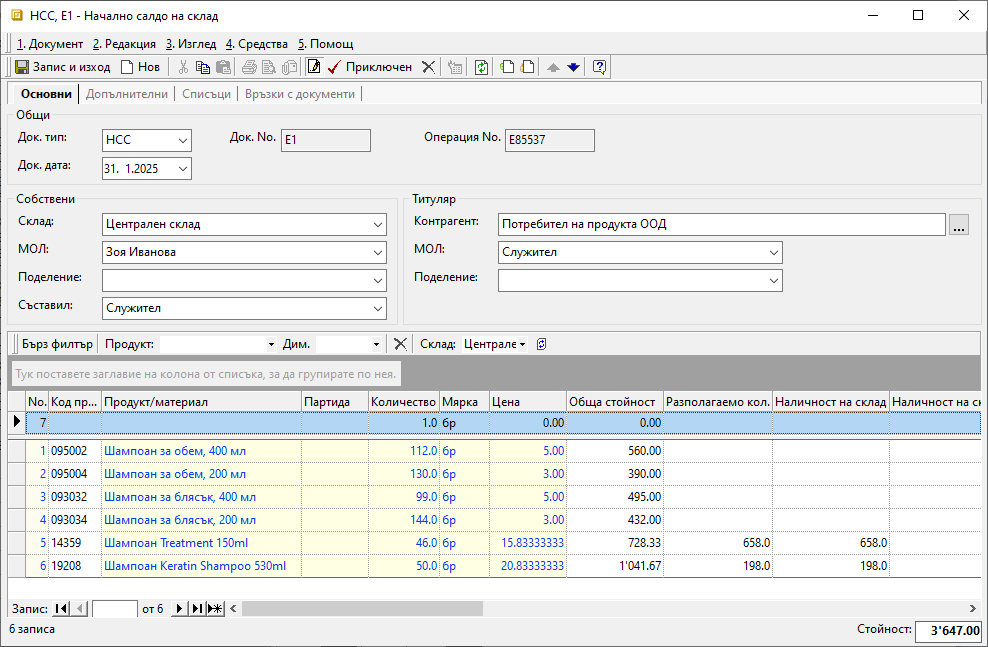

2.2.2.1. Начално салдо на склад#
С документ Началното салдо на склад се отразяват количествата на наличните стоки към определен момент. Това обикновено е при внедряването на Dreem ERP или в началото на отчетен период.
Точното въвеждане на началното салдо е критично за управлението на складовите операции.
За да се гарантира коректност на справките е необходимо да се въведат начални салда отделно за всеки настроен склад. Те трябва да съдържат, освен актуални количества, и стойности - доставни цени без ДДС.
Процесът по въвеждане на документ Началното салдо на склад е следният:
От Търговска система || Складови документи чрез десен бутон на мишката се избира Нов документ. Отваря се форма за въвеждане и редакция на складов документ.
В раздел Основни се въвеждат:
Док. тип – избира се тип на документа да бъде НСС – Начално салдо на склад;
Док. дата – поле за избор на дата, към която количествата на продуктите ще се отразят в наличността на склада;
Док. No – поле за избор на номер за документа;
Ако полето остане празно, системата ще генерира пореден номер на документ за текущия склад;Склад – поле за избор на склад, за който се отнасят началните салда;
МОЛ – избира се материално отговорното лице за текущия склад;
Полето се обзавежда автоматично, ако складът има настроен МОЛ по подразбиране.Поделение - в полето може да се посочи поделение от предварително настроените в контрагент Потребител на продукта;
Съставил - избира се персона, съставила документа;
Полето се обзавежда автоматично с настроените данни за текущия потребител на системата.Контрагент – данните за контрагент се обзавеждат автоматично при избиране на тип документ НСС;
Продукт/материал – въвежда се списък с всички продукти, които са налични в склада към избраната в документа дата;
Ако продуктите не са предварително въведени, системата позволява това да се направи в момента чрез десен бутон и Нов продукт.Партида - в тази колона могат да се попълват партиди на продукти;
Ако един продукт участва с няколко партиди, се въвежда отделен ред за всяка от тях.Количество – в колоната се въвеждат наличните количества по продукти към датата на документа;
Мярка - колоната трябва да съдържа основните мерни единици за всеки един продукт;
В складови документи продуктите се отразяват с настроените им основни мерни единици. Обикновено това е най-малката мярка, в която продуктът съществува в системата.Цена - в колоната се попълват единични цени без ДДС;
Обикновено се използва среднопретеглена цена за текущия склад.

Приключен - бутон в лентата с инструменти на формата;
След обзавеждане на реквизитите в НСС, документът трябва да бъде приключен. Това валидира данните от документа и те са видими в справките.